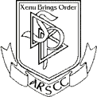

Copyright and Miscellanea
The text of the following files is © Jon
Atack 1990:
abbrev.htm
acks.htm
author.htm
bibliog.htm
bs1-1.htm through bs9-3.htm
contents.htm
epilogue.htm
preface.htm
whatissc.htm
The images in this electronic version come
from three sources:
- Bare-Faced Messiah: the true story of L.
Ron Hubbard (Russell Miller, 1987)
- Religion, Inc.: the Church of Scientology
(Stewart Lamont, 1986)
- "Secret Lives: L. Ron Hubbard"
(Channel 4 Television, 1997)
Library of Congress Cataloging-in-Publication
Data:
Atack, Jon.
A piece of blue sky: Scientology, Dianetics, and L. Ron Hubbard exposed / by Jon Atack.
p. cm.
"A Lyle Stuart book."
Includes bibliographical references and index.
ISBN 0-8184-0499-X : $19.95
1. Scientology - Controversial literature. 2. Dianetics - Controversial literature.
3. Hubbard, L. Ron (La Fayette Ron), 1911- 4. Church of Scientology - History. I.
Title.
BP605.S2A83 1990
299'.936'092-dc20
89-77666
CIP
Jon Atack has not been involved in the
production or distribution of this unauthorized electronic version. It is based on a
scanned copy originally produced by the former FACTnet with a "card catalog"
entry of E:\PCB\GEN\FILES\BOOKS\JON.TXT. This file has been available on the Internet for
several years from the websites of FACTnet and other individuals. Because of the
injunction against it in England and Wales (see under Related
Documents), it is advised that it not be distributed in those countries.
 |
This work has been produced on behalf of the
ARSCC (Alt.Religion.Scientology Central Committee (which does not exist))
as part of the "Xenu's Bookshelf" project. The ARSCC is part of a secret global
conspiracy against Scientology involving Internet users, psychiatrists, the Bank of
England and SMERSH. Allegedly. Xenu will prevail! |
|